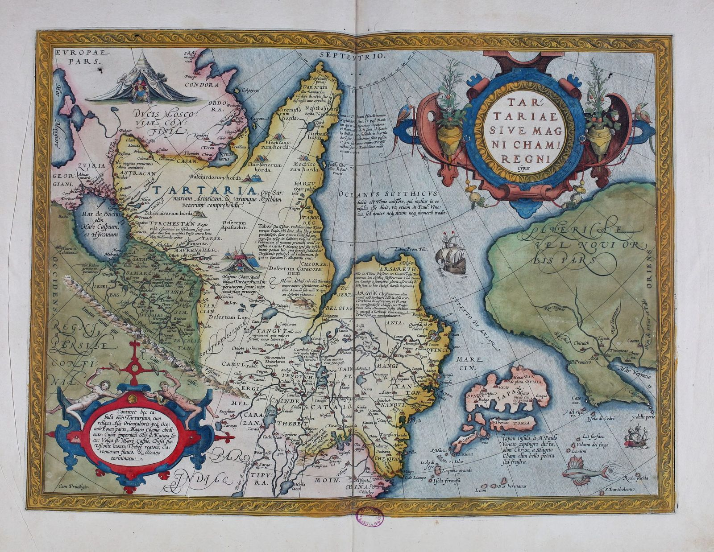

Tartariae sive Magni Chami regni typus

Machine transcription and translation (Claude Opus 5.5, 29 Oct 2026), not yet reviewed by a specialist. [?] marks an uncertain reading, [illegible] letters the model could not see.
Abraham Ortelius's map of Tartary, from the first edition of his atlas, the Theatrum orbis terrarum (Antwerp, 1570). It runs from the Volga to Japan and the edge of America, and its 40 engraved texts cite Marco Polo, Pliny and Hayton the Armenian. Several place the lost Ten Tribes of Israel in northern Asia. Each numbered pin opens one of those texts: the Latin as engraved, the abbreviations written out, and an English translation. All of it was read from the scan by an AI model, Claude Opus 5.5, then compared with Marcel van den Broecke's published edition at orteliusmaps.com. Overall, 5.4% of characters differ once the published text's own errors are corrected, and 2.5% leaving out the one note hidden in the binding fold. The model also read 371 smaller place names; they are not pinned yet because their positions were not recorded. Turn the sheet over for Ortelius's description of Tartary, printed on the back. This is the Boston Public Library copy, of the 1570 Latin issue B. HKUST's own copy of the map is in the collection without annotations.
TARTARIAE SIVE MAGNI CHAMI REGNI tÿpus
Map of Tartary, or of the Kingdom of the Great Cham.
Show on the mapContinet haec tabula omnem Tartariam, cum reliqua Asiae Orientalioris vsque Oceanum Eoum parte, Magno Chamo obediente: Cuius imperium Obÿ fluuio, Kataia lacu; Volga fluuio, Mari Caspio, Chesel fluuio, Vssonte monte, Thebet regione, Caromoram fluuio, & Oceano terminatur.
This map contains all Tartary, together with the remaining part of more easterly Asia as far as the Eastern Ocean, which obeys the Great Cham. His empire is bounded by the river Oby [Ob], the lake Kataia, the river Volga, the Caspian Sea, the river Chesel, Mount Vssonte, the region of Thebet [Tibet], the river Caromoram, and the Ocean.
Show on the mapHic magnus prouentus calami aromatici.
Here [there is] a great yield of sweet flag (calamus aromaticus).
Show on the mapMar de Bachu, olim Mare Caspium, et Hÿrcanum.
Sea of Bachu [Baku], formerly the Caspian and Hyrcanian Sea.
Show on the mapHic Rubini gemmae reperiuntur.
Here ruby gems are found.
Show on the mapSamarchand. magni Tamber[lanis] quondam sedes.
Samarchand [Samarkand], once the seat of the great Tamber[lane].
Show on the mapTVRCHESTAN Regio vnde cismontani 10. Tribuum socij ante 900. annos sunt accersiti a Persis contra Ismaelitae Mahumedis arma.
The region of TURCHESTAN, from which the allies of the 10 Tribes from this side of the mountains were summoned by the Persians, 900 years ago, against the arms of Mahumed the Ishmaelite.
Show on the mapTARTARIA, Quae Sarmatiam Asiaticam, & vtramque Scythiam veterum comprehendit.
TARTARIA, which comprises the Asiatic Sarmatia and both Scythias of the ancients.
Show on the mapMagnus Cham,(quod lingua Tartarorum Imperatorem sonat) maximus Asiae princeps.
The Great Cham (which in the language of the Tartars means Emperor), the greatest prince of Asia.
Show on the mapMons Althaÿ, vbi omnes Tartarÿ imperatores sepeliuntur, ab Haytone Armeno sub nomine Belgian describi videtur.
Mount Althay, where all the Tartar emperors are buried, seems to be described by Hayton the Armenian under the name Belgian.
Show on the mapTabor seu Tybur, vmbilicariaue Totarorum regio, vbi licet olim libros sacros perdidissent, sunt tamen vniti sub uno rege, qui 1540. in Galliam vsque ad regem Franciscum id nominis primum venit, et postea a Carolo V. Mantuae igni suae infidelitatis poenas luit: quia secrete solicitabat Christianos principes ad Iudaismum, de qua re Carolum V. alloquutus erat.
Tabor or Tybur, or the umbilical [i.e. central] region of the Totari, where, although they once lost their sacred books, they are nevertheless united under one king. He came in 1540 into France, as far as King Francis, the first of that name, and afterwards at Mantua paid, by fire, at the hands of Charles V, the penalty for his faithlessness, because he was secretly urging the Christian princes toward Judaism, a matter on which he had addressed Charles V.
Show on the mapDanorum siue Danitarum horda id est deiectio siue descensio aut expulsio.
Horde of the Dani or Danitae; 'horde', that is, a casting-down, or descent, or expulsion.
Show on the mapNepthalitarum horda, Nepthalitae, a[illegible]buna 10. Tri[?]buum Israelis nomine Neptali dict[illegible] sunt, et post Danitas qui in c[illegible]stigatione Aquilonari Danmar[illegible]i dicti sunt, ob Rachelis Balbab i[illegible]ns, secundo in loco Hudorum siue Ie[illegible]hudeorum sunt positi, et 476. sal[illegible] anno contra Perosam victores fuer[illegible]e. Enthalitas male udcant[?] ceteri.
Horde of the Nepthalitae. The Nepthalitae, a[...]buna, were called Neptali after the name of the 10 Tribes of Israel, and after [them] the Danitae, who in the northern chastisement [?] were called Danmar[...]i, on account of Rachel's Balbab [...]; in the second place they were placed in the position of the Hudori or Ie[...]hudei, and in the year 476 of salvation [?] they were victors against Perosa [?]. Others wrongly 'udcant' [perhaps for uocant, 'call'] them Enthalitae.
Show on the mapInsula falconum, Marci Pauli Veneti.
Island of falcons, [according to] Marco Polo the Venetian.
Show on the mapOCEANVS SCYTHICVS dulcis est Plinio auctore, qui multas in eo insulas esse dicit, vt etiam Marcus Paulus Venetus: sed neuter neque situm neque numerum tradit.
The SCYTHIAN OCEAN is fresh, on the authority of Pliny, who says that there are many islands in it, as does Marco Polo the Venetian too; but neither of them gives their position or their number.
Show on the mapARSARETH. Hic 10 Tribus secessere, et Totarorum siue Tartarorum loco Scÿthicae substituerunt. Vnde Gauth[?] seu Gauthaÿ a summa Dei gloria asserenda ibi dicti sunt, et hinc Cathaÿ clarissimum Regnum.
ARSARETH. Here the 10 Tribes withdrew, and put themselves in place of the Totari or Tartars, in Scythian [land]. Hence they were called there Gauth[?] or Gauthay, from proclaiming the highest glory of God; and hence [comes] Cathay, a most famous kingdom.
Show on the mapARGON. Christianorum olim regnum nomine Presbiteri Ioannis in Asia erat, a Diuo Thoma ibi institutum, vt Romanae corresponderet ecclesiae, per Presbiterum Ioannem Africanum Romae obediens Et antequam a Gothanis vinceretur Criue Rom[illegible]oue nuncupabatur.
ARGON. There was once in Asia a kingdom of Christians under the name of Prester John, instituted there by Saint Thomas so that it might correspond to the Roman church, being obedient to Rome through the African Prester John. And before it was conquered by the Gothani it was called Criue Rom[...]oue [?].
Show on the mapTANGVT. Hic artem imprimendi ante mille, vt ferunt, annos habuerunt
TANGUT. Here, as they say, they had the art of printing a thousand years ago.
Show on the mapHis montibus Rhabarbarum prouenit
In these mountains rhubarb grows.
Show on the mapCambalu metropolis, habet 28. millia in circuitu.
Cambalu [Khanbaliq, Beijing], the metropolis; it is 28 miles in circuit.
Show on the mapPons marmoreus 300. passuum.
A marble bridge of 300 paces.
Show on the mapHis montibus eruuntur lapides, quibus utuntur ad focum loco lignorum.
From these mountains stones are dug out, which they use on the hearth instead of wood.
Show on the mapQuinsai id est ciuitas celi
Quinsai [Hangzhou], that is, the city of heaven.
Show on the mapJapan insula, a Marco Paulo Veneto zipangri dicta, olim Chrÿse, a Magno Cham olim bello petita sed frustra.
The island of Japan, called Zipangri by Marco Polo the Venetian, formerly Chryse; once attacked in war by the Great Cham, but in vain.
Show on the mapMeaco insule ciuitas primaria
Meaco [Kyoto], the principal city of the island.
Show on the mapMinas de plata.
Silver mines.
Show on the mapAMERICAE VEL NOVI ORBIS PARS
Part of America, or the New World.
Show on the map4 Esdrae Capitulo 13.
4 Esdras, chapter 13.
Show on the mapBARGV regio palustris
BARGU, a marshy region.
Show on the mapImaus mons qu[?] & Caucasus.
Mount Imaus, qu[...] and Caucasus.
Show on the mapSOLVTVDINES VASTAE
Vast wildernesses.
Show on the mapVolga, et Hedel, olim Rha fluuius.
The river Volga, and Hedel, formerly Rha.
Show on the mapTauris olim Ecbatana
Tauris [Tabriz], formerly Ecbatana.
Show on the mapTabin Promontorium Plin[ii].
Cape Tabin, [according to] Pliny.
Show on the mapMeon fluuius Marci Pauli
The river Meon, [according to] Marco Polo.
Show on the mapBrior fluuius aurifer.
The river Brior, gold-bearing.
Show on the mapSEPTENTRIO.
North.
Show on the mapOCCIDENS
West.
Show on the mapORIENS
East.
Show on the mapCum Priuilegio.
With privilege.
Show on the mapTARTARIA siue MAGNI CHAMI IMPERIVM.
TARTARIA or THE EMPIRE OF THE GREAT CHAM.
Show on the mapQVI Tartaros describere velit, multas nationes describat necesse est, & easdem longè ab inuicem distantes. Nam Tartaria hodie ferè vocatur, quicquid terrarum ab Orientali Oceano, siue Mangico, positum est inter Septentrionalem Oceanum & Meridionales regiones Sinam, Indiæ partem extra Gangem, Sacos, Iaxartem (hodie Chesel) fluuium, mare Caspium & Meotidis paludem; & ad Moscos penè Occidentem versus: quia hæc omnia ferè occupauerunt Tartari, & in iisdem locis residerunt. Ita vt antiquorum scriptorum Sarmatiam Asiaticam, vtramque Scythiam, Sericamq́ue regionem (quæ fortasse hodie Cataio est) compræhendat. Horum nomen Anno salutis M.CC.XII. primùm in Europa auditum est.
Whoever would describe the Tartars must necessarily describe many nations, and these far distant from one another. For today Tartaria is generally the name for whatever land lies from the Eastern Ocean, or Mangic [Ocean], between the Northern Ocean and the southern regions (Sina, the part of India beyond the Ganges, the Saci, the river Iaxartes (today Chesel) [Syr Darya], the Caspian Sea and the Meotis marsh [Sea of Azov]), and toward the Mosci [Muscovites], almost to the west: because the Tartars have occupied nearly all these lands and have settled in those same places. So that it comprises the Asiatic Sarmatia of the ancient writers, both Scythias, and the Serican region (which is perhaps today Cataio [Cathay]). Their name was first heard in Europe in the year of salvation 1212.
Show on the mapIn hordas diuiduntur, quæ vox illis significat conuentus, aut multitudo. Sed vt varias longè lateq́ue distantes Prouincias inhabitant, ita neque in moribus aut vitæ genere omnes conueniunt. Homines statura quadrata, lata facie & obesa, oculis contortis & concauis, sola barba horridi, cetera rasi, corpore valido, animo audaci; equis, aliisq́ue animalibus quoquo modo interemptis suauiter vescuntur, demptis porcis, à quibus abstinent: inediæ somniq́ue patientissimi: equitantibus porrò si fames sitisq́ue illos molestauerit, equis quibus insident venas solent incidere, haustoq́ue eorum sanguine famem pellunt.
They are divided into hordas, a word which among them signifies assemblies, or a multitude. But just as they inhabit various provinces lying far and wide apart, so neither do they all agree in customs or manner of life. They are men of square stature, with a broad and fat face, with twisted and hollow eyes, shaggy only in the beard, shaven everywhere else, strong of body, bold of spirit; they feed with relish on horses and other animals killed in any manner whatever, except pigs, from which they abstain: they are most enduring of hunger and of [want of] sleep: moreover, if hunger and thirst trouble them while they are riding, they are accustomed to cut open the veins of the horses on which they sit, and, having drunk their blood, they drive away hunger.
Show on the mapEt quoniam incertis vagantur sedibus, stellarum, imprimis verò Poli Arctici, quem ipsi sua lingua Selesnikol, hoc est, ferreum clauum (teste Sigismundo ab Herberstein,) vocant, aspectu, cursum suum dirigere solent. Vno in loco non diu commorantur, rati grauem esse infelicitatem diu in eodem loco hærere. Iustitia apud illos nulla. Homines sunt rapacissimi, nempe pauperrimi; vt qui alienis semper inhiant. Auri & argenti apud eos nullus vsus.
And since they wander with no fixed abodes, they are accustomed to direct their course by the sight of the stars, and above all of the Arctic Pole, which they themselves in their own language call Selesnikol, that is, the iron nail (on the testimony of Sigismundus ab Herberstein [Sigismund von Herberstein]). They do not stay long in one place, thinking it a grave misfortune to remain long in the same place. Among them there is no justice. They are most rapacious men, being indeed most poor; as men who are always gaping after the goods of others. Among them there is no use of gold and silver.
Show on the mapTartaros, eorumq́ue mores & ritus accuratissimè descriptos habes apud Sigismundum ab Herberstein. Vide & Antonij Bonfinij commentaria Hungarica; Marcum Paulum Venetum, quem diu inter illos vixisse constat. De eorum origine lege Mathiam à Michou; Haythonum Armenum; Cælium Curionem in historia Sarracenica; & literas Iacobi Nauarchi Iesuitæ. De Tartaris habes etiam quædam non negligenda apud Nicephorum, libro. 18. capite 30. 47
The Tartars, and their customs and rites, you have described most accurately in Sigismundus ab Herberstein. See also the Hungarian commentaries of Antonius Bonfinius [Antonio Bonfini]; M. Paulus Venetus [Marco Polo], who, it is established, lived among them for a long time. On their origin read Mathias à Michou [Maciej of Miechów]; Haythonus the Armenian [Hayton of Corycus]; Caelius Curio [Celio Secondo Curione] in the Saracen history; and the letters of Iacobus Nauarchus, Jesuit. On the Tartars you also have some things not to be neglected in Nicephorus, book 18, chapter 30. [Page number:] 47
Show on the map